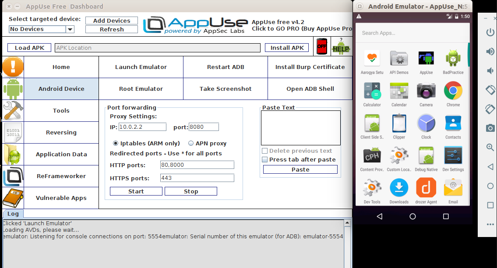
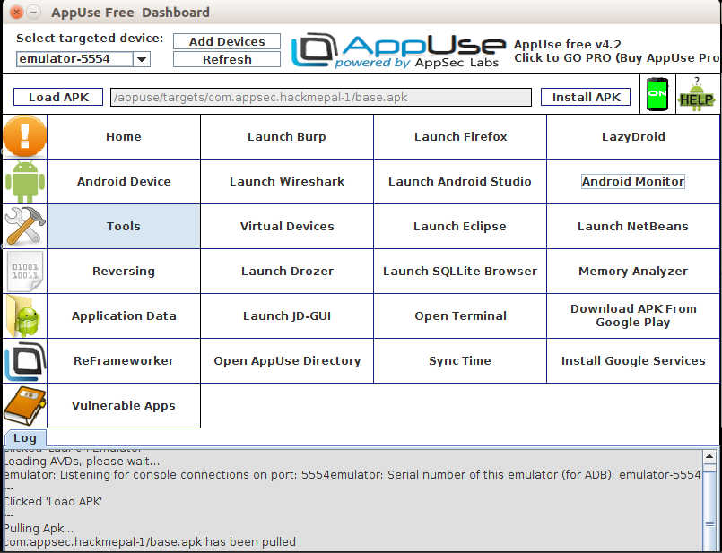
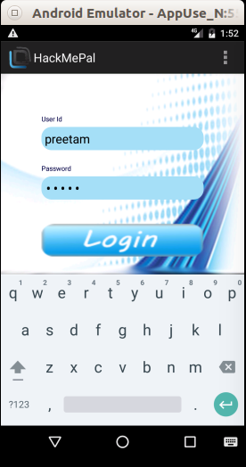
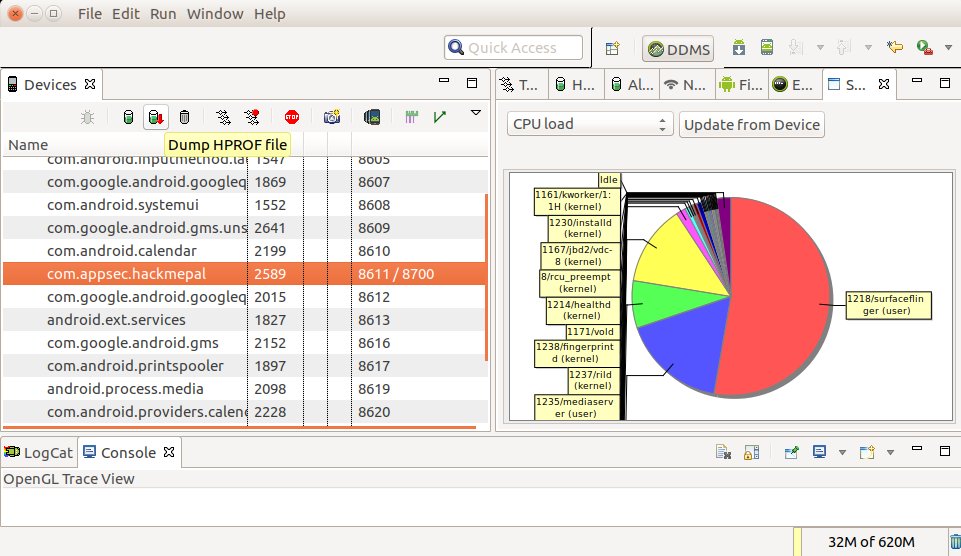
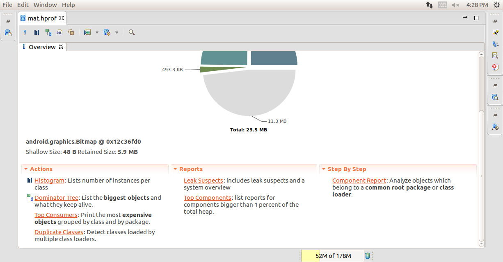
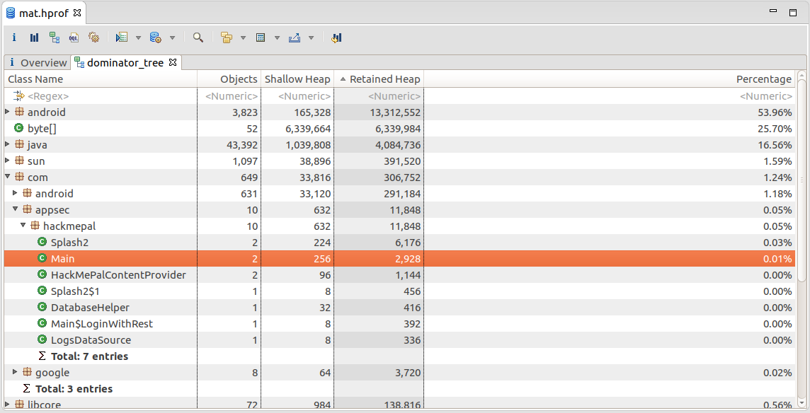
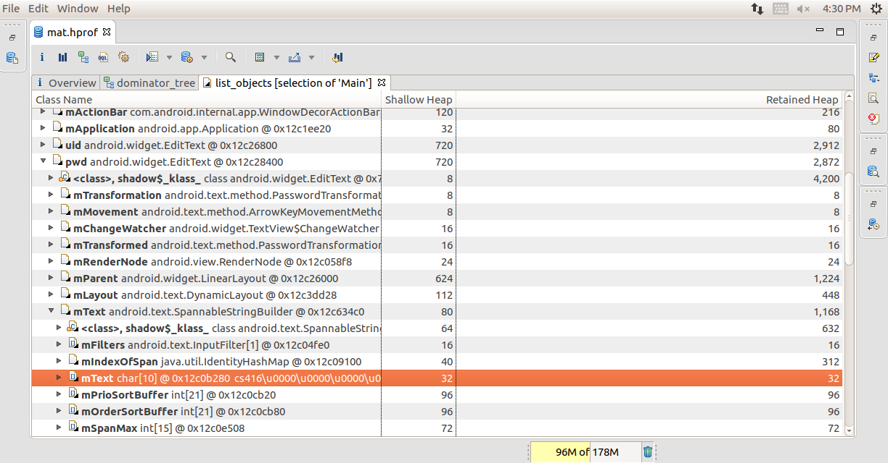

Let’s start by defining some testing methods:
Black-box testing is conducted without the tester having any information about the app being tested. This process is sometimes called "zero-knowledge testing". The main purpose of this test is allowing the tester to behave like a real attacker in the sense of exploring possible uses for publicly available and discoverable information.
White-box testing (sometimes called "full knowledge testing") is the total opposite of black-box testing in the sense that the tester has full knowledge of the app. The knowledge may encompass source code, documentation, and diagrams. This approach allows much faster testing than black-box testing due to its transparency and with the additional knowledge gained a tester can build much more sophisticated and granular test cases.
Gray-box testing is all testing that falls in between the two aforementioned testing types: some information is provided to the tester (usually credentials only), and other information is intended to be discovered. This type of testing is an interesting compromise in the number of test cases, the cost, the speed, and the scope of testing. Gray-box testing is the most common kind of testing in the security industry.
Static Analysis
During static analysis, the mobile app's source code is reviewed to ensure appropriate implementation of security controls. In most cases, a hybrid automatic/manual approach is used. Automatic scans catch the low-hanging fruit, and the human tester can explore the code base with specific usage contexts in mind.
Manual Code Review
A tester performs manual code review by manually analyzing the mobile application's source code for security vulnerabilities. Methods range from a basic keyword search via the 'grep' command to a line-by-line examination of the source code. IDEs (Integrated Development Environments) often provide basic code review functions and can be extended with various tools.
A common approach to manual code analysis entails identifying key security vulnerability indicators by searching for certain APIs and keywords, such as database-related method calls like "executeStatement" or "executeQuery". Code containing these strings is a good starting point for manual analysis.
In contrast to automatic code analysis, manual code review is very good for identifying vulnerabilities in the business logic, standards violations, and design flaws, especially when the code is technically secure but logically flawed. Such scenarios are unlikely to be detected by any automatic code analysis tool.
A manual code review requires an expert code reviewer who is proficient in both the language and the frameworks used for the mobile application. Full code review can be a slow, tedious, time-consuming process for the reviewer, especially given large code bases with many dependencies.
Automated Source Code Analysis
Automated analysis tools can be used to speed up the review process of Static Application Security Testing (SAST). They check the source code for compliance with a predefined set of rules or industry best practices, then typically display a list of findings or warnings and flags for all detected violations. Some static analysis tools run against the compiled app only, some must be fed the original source code, and some run as live-analysis plugins in the Integrated Development Environment (IDE).
Although some static code analysis tools incorporate a lot of information about the rules and semantics required to analyze mobile apps, they may produce many false positives, particularly if they are not configured for the target environment. A security professional must therefore always review the results.
Static Analysis using MOBSF
Installing MobSF : https://mobsf.github.io/docs/#/installation
Static Analysis Architecture of MobSF:Static Analysis using MobSF:
Android Source Tree-view using MobSF
Dynamic Analysis
Why dynamic analysis in the first place? Suppose you are an attacker and the target app -
- Cannot be decompiled
- Is heavily obfuscated
- Generates values dynamically and cannot be retrieved from decompiled code
- Signed and encrypted traffic, etc
Memory Dump Analysis
This is performed using Eclipse MAT tool. Following is an example of exposing the password entered by a user into an app by analysing the memory dump. Steps:-
AppUse dashboard - AppUse is a comprehensive tool for mobile application pentesting. It brings many tools under one GUIw w

-
AppUse tools collection -

-
Android emulator - For the purpose of this example we used a custom built vulnerable app called HackMePal

-
Dumping the memory of mobile app into .hprof file

-
Converting the .hprof file into readable version
hprof-conv comm.appsec.hackmepal.hprof mat.hprof -
Opening into .hprof file in Eclipse MAT

-
Open the dominator tree reorder and navigate through the packages and Java classes to find the desired variable


Debugging
This includes -- Setting breakpoints
- Bypassing restrictions
- Jump to specific code sections
- Expose secrets from memory
Data Storage Analysis
Android provides a number of methods for data storage depending on the needs of the user, developer, and application. For example, some apps use data storage to keep track of user settings or user-provided data. Data can be stored persistently for this use case in several ways.
Data Storage Techniques
The following list of persistent storage techniques are widely used on the Android platform:-
Shared Preferences
The SharedPreferences API is commonly used to permanently save small collections of key-value pairs. Data stored in a SharedPreferences object is written to a plain-text XML file. The SharedPreferences object can be declared world-readable (accessible to all apps) or private. Misuse of the SharedPreferences API can often lead to exposure of sensitive data. -
SQLite Databases
SQLite is an SQL database engine that stores data in .db files. The Android SDK has built-in support for SQLite databases. The main package used to manage the databases is android.database.sqlite. SQLite databases can be stored in encrypted form as well as in plain text form -
Firebase Databases
Firebase is a development platform with more than 15 products, and one of them is Firebase Real-time Database. It can be leveraged by application developers to store and sync data with a NoSQL cloud-hosted database. The data is stored as JSON and is synchronized in real-time to every connected client and also remains available even when the application goes offline. -
Internal Storage
We can save files to the device's internal storage. Files saved to internal storage are containerized by default and cannot be accessed by other apps on the device. When the user uninstalls your app, these files are removed. -
External Storage
Every Android-compatible device supports shared external storage. This storage may be removable (such as an SD card) or internal (non-removable). Files saved to external storage are world-readable. The user can modify them when USB mass storage is enabled. -
Keystore
The Android KeyStore supports relatively secure credential storage. As of Android 4.3 (API level 18), it provides public APIs for storing and using app-private keys. An app can use a public key to create a new private/public key pair for encrypting application secrets, and it can decrypt the secrets with the private key.
You can protect keys stored in the Android KeyStore with user authentication in a confirmed credential flow. The user's lock screen credentials (pattern, PIN, password, or fingerprint) are used for authentication.
Testing Local Storage for Sensitive Data
- Analyze data storage in the source code.(Using Static Analysis)
- Be sure to trigger all possible functionality in the application (e.g. by clicking everywhere possible) in order to ensure data generation.
-
Check all application generated and modified files and ensure that the storage method is sufficiently secure.
- This includes SharedPreferences, SQL databases, Internal Storage, External Storage, etc.
- ADB CLI can be used to extract generated files
- Check Resources files to check if any sensitive information is stored in it
In general sensitive data stored locally on the device should always be at least encrypted, and any keys used for encryption methods should be securely stored within the Android Keystore. These files should also be stored within the application sandbox. If achievable for the application, sensitive data should be stored off device or, even better, not stored at all.
More information of Storing application Data: https://developer.android.com/topic/security/data
Cryptography
Cryptography plays an especially important role in securing the user's data - even more so in a mobile environment, where attackers having physical access to the user's device is a likely scenario. This chapter provides an outline of cryptographic concepts and best practices relevant to mobile apps. These best practices are valid independent of the mobile operating system.
Identifying Insecure (or Deprecated) Cryptographic Algorithms
When assessing a mobile app, you should make sure that it does not use cryptographic algorithms and protocols that have significant known weaknesses or are otherwise insufficient for modern security requirements
- Inspect the app's source code to identify instances of cryptographic algorithms that are known to be weak, such as: DES, 3DES RC2 RC4 BLOWFISH MD4 MD5 SHA1.
- Cryptographic algorithms are up to date and in-line with industry standards.
- Key lengths are in-line with industry standards and provide protection for sufficient amounts of time. A comparison of different key lengths and protection they provide taking into account Moore's law is available online. Key lengths are in-line with industry standards and provide protection for sufficient amounts of time. A comparison of different key lengths and protection they provide taking into account Moore's law is available online.
- Cryptographic means are not mixed with each other: e.g. you do not sign with a public key, or try to reuse a keypair used for a signature to do encryption.
- Cryptographic parameters are well defined within reasonable range.
Common Configuration Issues (MSTG-CRYPTO-1, MSTG-CRYPTO-2 and MSTG-CRYPTO-3)
-
Insufficient Key Length
Even the most secure encryption algorithm becomes vulnerable to brute-force attacks when that algorithm uses an insufficient key size. Ensure that the key length fulfills accepted industry standards. -
Symmetric Encryption with Hard-Coded Cryptographic Keys
Hardcoded encryption key means that a key is:- a part of application resources
- value which can be derived from known values
- hardcoded in code
- Ensure that no keys or passwords are stored within the source code. This means you should check native code, JavaScript/Dart code, Java/Kotlin code on Android and Objective-C/Swift in iOS. Note that hard-coded keys are problematic even if the source code is obfuscated since obfuscation is easily bypassed by dynamic instrumentation
-
If the app is using two-way SSL (both server and client certificates are validated), make sure that:
- The password to the client certificate isn't stored locally or is locked in the device Keychain.
- The client certificate isn't shared among all installations.
- If the app relies on an additional encrypted container stored in app data, check how the encryption key is used. If a key-wrapping scheme is used, ensure that the master secret is initialized for each user or the container is re-encrypted with a new key. If you can use the master secret or previous password to decrypt the container, check how password changes are handled.
- Secret keys must be stored in secure device storage whenever symmetric cryptography is used in mobile apps. For more information on the platform-specific APIs.
-
Weak Key Generation Functions
Cryptographic algorithms (such as symmetric encryption or some MACs) expect a secret input of a given size. For example, AES uses a key of exactly 16 bytes. A native implementation might use the user-supplied password directly as an input key. Using a user-supplied password as an input key has the following problems:- If the password is smaller than the key, the full key space isn't used. The remaining space is padded (spaces are sometimes used for padding).
- A user-supplied password will realistically consist mostly of displayable and pronounceable characters. Therefore, only some of the possible 256 ASCII characters are used and entropy is decreased by approximately a factor of four.
Choose an appropriate iteration count when using password derivation functions. - Weak Random Number Generators
-
Custom Implementations of Cryptography
Carefully inspect all the cryptographic methods used within the source code, especially those that are directly applied to sensitive data. All cryptographic operations should use standard cryptographic APIs for Android and iOS (we'll write about those in more detail in the platform-specific chapters). Any cryptographic operations that don't invoke standard routines from known providers should be closely inspected. -
Inadequate AES Configuration
Advanced Encryption Standard (AES) is the widely accepted standard for symmetric encryption in mobile apps. It's an iterative block cipher that is based on a series of linked mathematical operations. AES performs a variable number of rounds on the input, each of which involve substitution and permutation of the bytes in the input block. Each round uses a 128-bit round key which is derived from the original AES key. -
Predictable Initialization Vector
CBC, OFB, CFB, PCBC mode require an initialization vector (IV) as an initial input to the cipher. The IV doesn't have to be kept secret, but it shouldn't be predictable. Make sure that IVs are generated using a cryptographically secure random number generator. -
Protecting Keys in Memory
When memory dumping is part of your threat model, then keys can be accessed the moment they are actively used. Memory dumping either requires root-access (e.g. a rooted device or jailbroken device) or it requires a patched application with Frida (so you can use tools like Fridump). Therefore it is best to consider the following, if keys are still needed at the device:- Make sure that all cryptographic actions and the keys itself remain in the Trusted Execution Environment (e.g. use Android Keystore) or Secure Enclave (e.g. use the Keychain and when you sign, use ECDHE).
- If keys are necessary which are outside of the TEE / SE, make sure you obfuscate/encrypt them and only de-obfuscate them during use. Always zero out keys before the memory is released, whether using native code or not. This means: overwrite the memory structure (e.g. nullify the array) and know that most of the Immutable types in Android (such as BigInteger and String) stay in the heap.
-
Protecting keys in Transport
When keys need to be transported from one device to another, or from the app to a backend, make sure that proper key protection is in place, by means of an transport keypair or another mechanism. Often, keys are shared with obfuscation methods which can be easily reversed. Instead, make sure asymmetric cryptography or wrapping keys are used.